2025.03.02
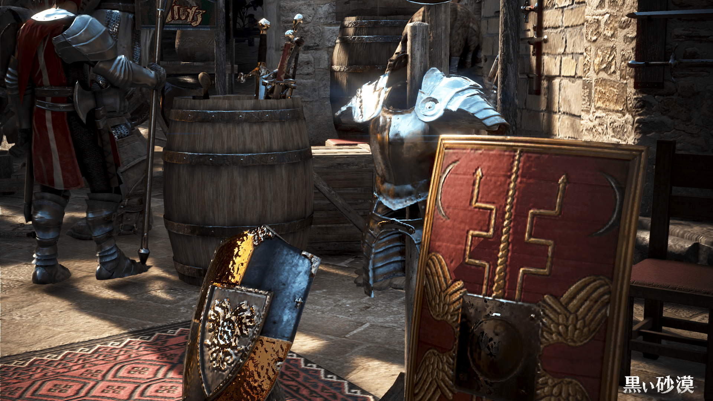
登山スポットによっては、ジャンプ装備が必要になります。
みんなも作ろう！
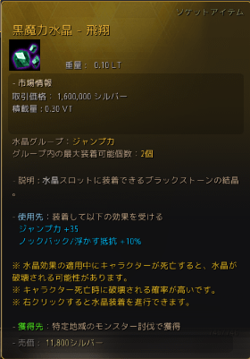
水晶二つで+70です。
ちなみに、落下ダメージで死亡したときには水晶は割れないような気がする。
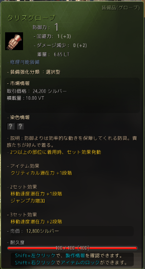
タリス装備2部位のセット効果で、ジャンプ力が上昇します。
防御力の関係から、グローブとシューズがおすすめ。
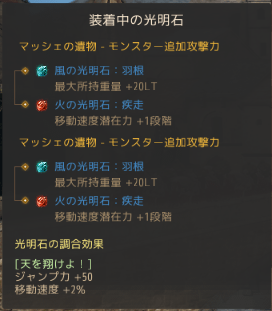
風の光明石：羽根 x2と、火の光明石：疾走x2の調合効果です。
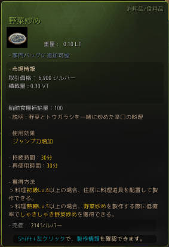
30分間ジャンプ力が上昇します。青枠のしゃきしゃき野菜炒めは60分間で、上昇値は同じっぽい気がする。
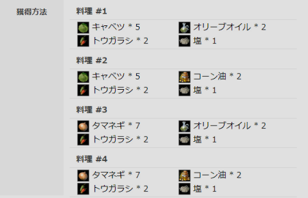
材料は、野菜 x5 オリーブオイル x2 トウガラシ x2 塩 x2
カルフェオンのミラノ・ベルッチが売ってるパプリカが野菜として使えます。おすすめ
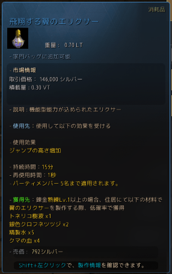
緑枠は効果時間10分、青枠は効果時間15分です。これも上昇値は同じっぽいです。
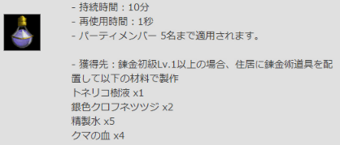
材料は、トネリコ樹液 x1 銀色クロフネツツジ x2 精製水 x5 クマの血x4
銀色クロフネツツジも店売りしてて、カルフェオンのニヴェスから買えます。
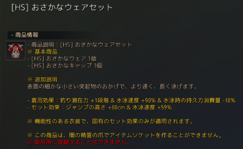
セット効果で、ジャンプの高さ+80cmです
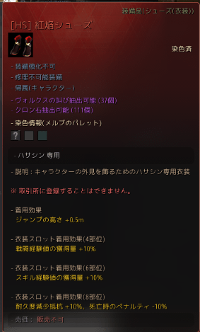
普通のアバターの足にも、ジャンプの高さ+50cmの効果がついてます。
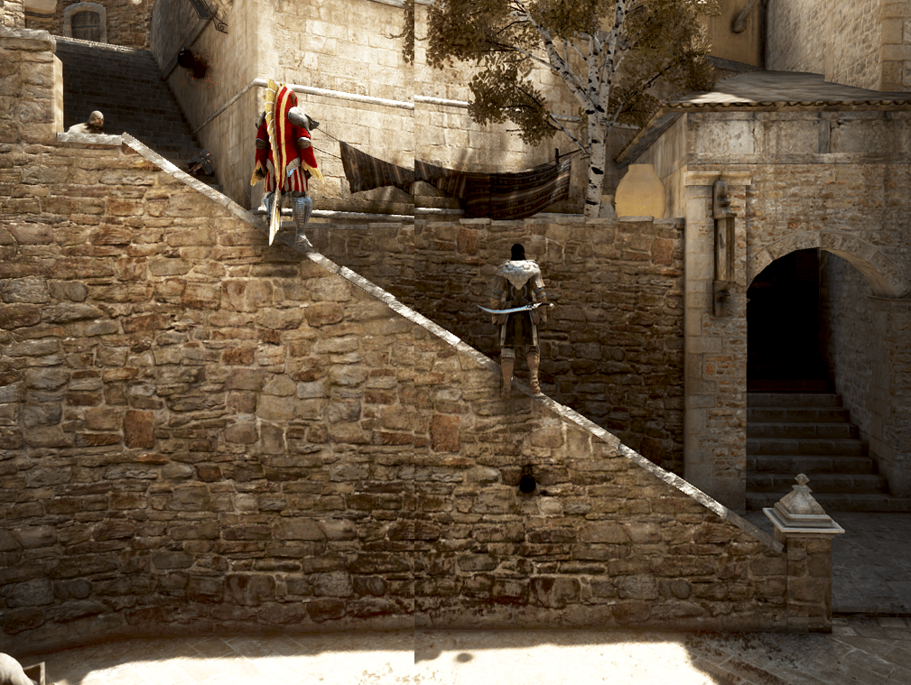
上記の装備・バフを全て付けて、一回ジャンプ＋パルクールモーションで登ってみました。
多段ジャンプができる職の場合、複数のジャンプにバフがかかるので結構変わります。
みんなも用意してみてね！
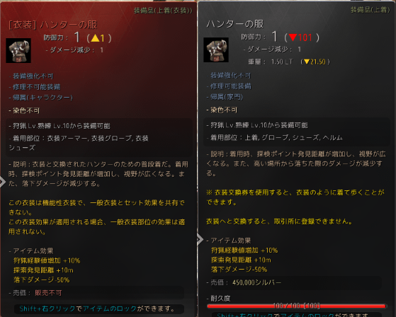
店売り生活服の「ハンターの服」には「落下ダメージ-50%」という効果がついています。
衣装交換券を使ってアバター化したものにもその効果はあるので、二つ付ければ落下ダメージ0になります。
ジャンプ力上昇効果はありませんが、練習に使えるかもしれません